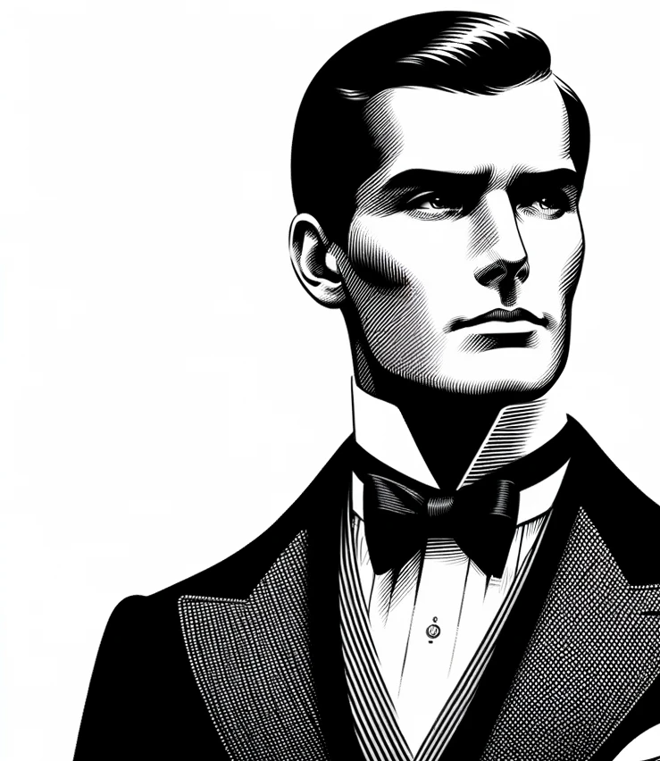

Jacques Carelman: Visionario del Absurdo
Con un ojo agudo para lo inverosímil y lo fantástico, Jacques Carelman
se erige como el maestro indiscutible de los objetos imposibles. Su
legado, una oda a la belleza de lo impracticable, desafía la lógica y
encanta a la imaginación, llevando a los observadores a un viaje por
la elegancia del absurdo..
La Esencia de lo Inalcanzable
En Nonsense Store, tratamos cada objeto imposible con el respeto y la
reverencia que merece. No porque tengan alguna función práctica, sino
precisamente porque no la tienen. Cada artículo es una pieza de arte,
un objeto de deseo, un tributo a la imaginación sin límites. Y sí,
también son perfectos para aquellos que sienten que ya lo tienen todo.
Porque, ¿qué mejor manera de destacar en un mundo saturado que con
algo absolutamente inútil?
Compromiso con lo Improbable
En un mundo inundado de pragmatismo y utilidad, los objetos imposibles
se presentan como un respiro sarcástico y refrescante. ¿Quién necesita
un paraguas con agujeros o una tetera con dos bocas opuestas? Todos,
claramente. Son piezas de conversación, iconos de un mundo que no se
toma demasiado en serio. Es un recordatorio de que no todo en la vida
tiene que tener un propósito... excepto hacernos reír.
Sé parte de la historia, forma parte de la revolución